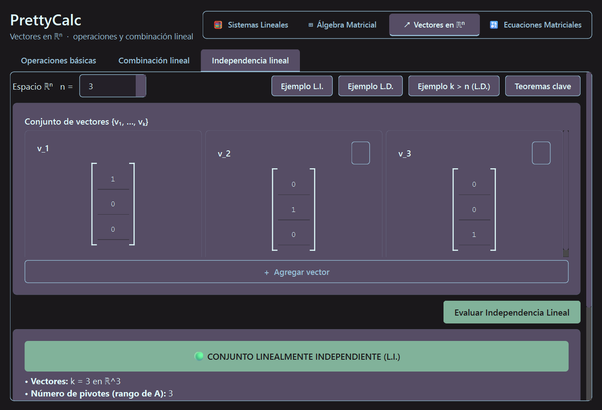
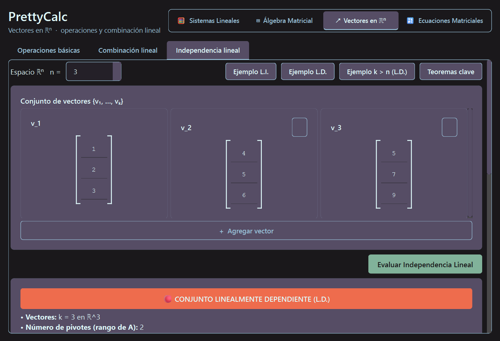
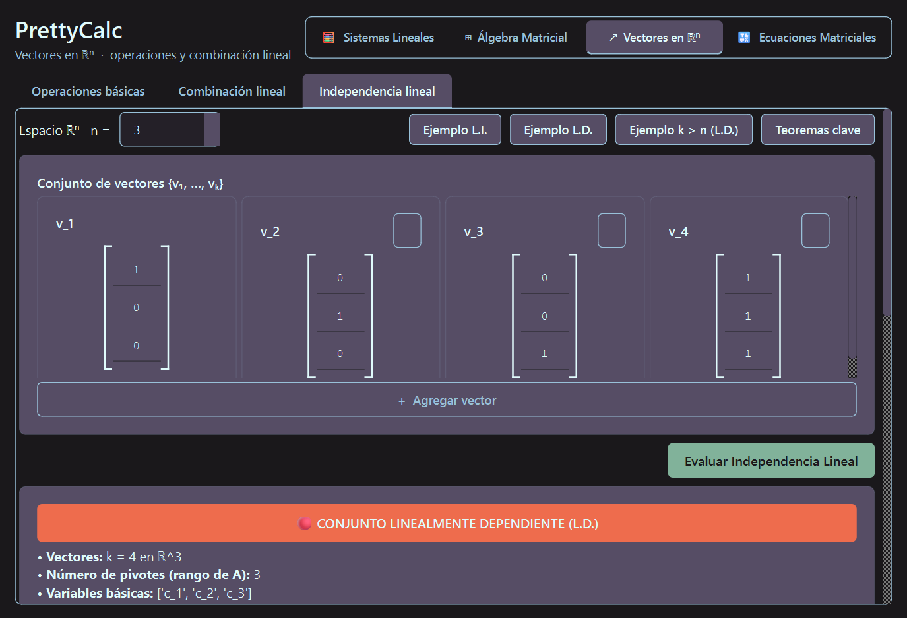

| Docente: | Docente de la Asignatura de Álgebra Lineal |
| Grupo de Proyecto: | Grupo 4 |
| Integrantes: |
• Natanael [Apellidos] (Carnet: [Número]) • Roberto Fabio T. [Apellidos] (Carnet: [Número]) • [Integrante 3] [Apellidos] (Carnet: [Número]) |
| Carrera: | Ingeniería en Sistemas de Información / Software |
| Fecha: | Septiembre de 2026 |
El propósito de esta actividad es modelar e implementar en Python estándar (100% puro, sin bibliotecas externas como NumPy, SciPy o SymPy) una herramienta analítica capaz de evaluar si un conjunto arbitrario de \(k\) vectores en \(\mathbb{R}^n\) es Linealmente Independiente (L.I.) o Linealmente Dependiente (L.D.).
Toda la aritmética computacional se diseñó con precisión exacta mediante la clase nativa fractions.Fraction para evitar errores por redondeo de punto flotante. Asimismo, la solución se implementó bajo la directriz de Arquitectura Modular por Carpetas (Calculadora_Algebra_Lineal/) con menús interactivos, cabeceras en Logotipo ASCII y consulta interactiva de Teoremas Clave.
Sea un conjunto de \(k\) vectores \(\{v_1, v_2, \dots, v_k\}\) pertenecientes al espacio vectorial \(\mathbb{R}^n\). Se plantea la ecuación vectorial homogénea: \[c_1 v_1 + c_2 v_2 + \dots + c_k v_k = \mathbf{0}\] donde \(c_1, c_2, \dots, c_k \in \mathbb{R}\) son escalares incógnitos.
La ecuación vectorial se traduce de forma natural en el sistema de ecuaciones lineales homogéneo: \[A \mathbf{c} = \mathbf{0}\] donde la matriz \(A\) de tamaño \(n \times k\) tiene como columnas a los vectores: \[A = \begin{bmatrix} v_1 & v_2 & \dots & v_k \end{bmatrix}\] El vector de incógnitas es \(\mathbf{c} = [c_1, \dots, c_k]^T\) y la matriz aumentada del sistema homogéneo es \([A \mid \mathbf{0}]\) de dimensión \(n \times (k + 1)\).
El algoritmo aplica Eliminación Gaussiana mediante operaciones elementales de fila (\(f_i \leftrightarrow f_j\), \(f_i \to k \cdot f_i\), \(f_i \to f_i + k \cdot f_j\)) para transformar la matriz a su Forma Escalonada por Filas (REF):
La relación entre el número de pivotes \(r\) y la cantidad de vectores \(k\) determina el veredicto:
Conforme a las directrices de la Universidad Americana, el código se distribuyó en una arquitectura modular limpia por paquetes:
Calculadora_Algebra_Lineal/
│
├── main.py <-- Menú Principal de la Calculadora
├── modulos/
│ ├── __init__.py <-- Inicializador de paquete
│ ├── modulo_sistemas.py <-- Módulo 1: Sistemas de Ecuaciones (SEL)
│ ├── modulo_vectores.py <-- Módulo 2: Vectores e Indep. Lineal (Programa 4)
│ ├── modulo_matrices.py <-- Módulo 3: Operaciones Matriciales e Inversa
│ └── modulo_determinantes.py <-- Módulo 4: Determinantes y Propiedades
└── teoremas/
├── __init__.py
└── resumen_teoremas.py <-- Opción 0: Teoremas Clave por Módulo
Datos ingresados: \(k = 3\) vectores en \(\mathbb{R}^3\):
\[v_1 = (1, 0, 0)^T, \quad v_2 = (0, 1, 0)^T, \quad v_3 = (0, 0, 1)^T\]
Matriz Aumentada Homogénea \([A \mid \mathbf{0}]\):
\[\begin{bmatrix} 1 & 0 & 0 & \mid & 0 \\ 0 & 1 & 0 & \mid & 0 \\ 0 & 0 & 1 & \mid & 0 \end{bmatrix}\]
Resultados del Sistema:
Número de pivotes = 3 (\(r = k\)). Variables libres = 0.
Veredicto: LINEALMENTE INDEPENDIENTE (L.I.) (Única solución trivial).

Figura 1: Evaluación gráfica de conjunto Linealmente Independiente en PrettyCalc.
Datos ingresados: \(k = 3\) vectores con dependencia \(v_3 = v_1 + v_2\):
\[v_1 = (1, 2, 3)^T, \quad v_2 = (4, 5, 6)^T, \quad v_3 = (5, 7, 9)^T\]
Forma Escalonada por Filas (REF):
\[\begin{bmatrix} 1 & 4 & 5 & \mid & 0 \\ 0 & -3 & -3 & \mid & 0 \\ 0 & 0 & 0 & \mid & 0 \end{bmatrix}\]
Resultados del Sistema:
Número de pivotes = 2 (\(r < k\)). Variable libre = \(c_3\).
Veredicto: LINEALMENTE DEPENDIENTE (L.D.).
Combinación no trivial obtenida: \((1) \cdot v_1 + (1) \cdot v_2 + (-1) \cdot v_3 = \mathbf{0}\).

Figura 2: Evaluación gráfica de conjunto Linealmente Dependiente y carrusel de pasos en PrettyCalc.
Datos ingresados: \(k = 4\) vectores en \(\mathbb{R}^3\):
\[v_1 = (1, 0, 0)^T, \quad v_2 = (0, 1, 0)^T, \quad v_3 = (0, 0, 1)^T, \quad v_4 = (1, 1, 1)^T\]
Resultados: Detección teórica preliminar: \(k = 4 > n = 3 \implies\) forzosamente L.D.
Pivotes = 3, Variable libre = \(c_4\). Veredicto: LINEALMENTE DEPENDIENTE (L.D.).

n" style="max-width: 100%; border: 1px solid #ccc; border-radius: 6px; box-shadow: 0 2px 8px rgba(0,0,0,0.1);">Figura 3: Diagnóstico automático del Teorema Fundamental de Dimensión (\(k > n\)) en PrettyCalc.
Conforme a las instrucciones de entrega en Moodle:
Programa 4_Grupo 4_Apellido1_Apellido2.zipPrograma 4_Grupo4.py (Código Python 100% puro y exhaustivamente comentado).Informe_Programa 4_Grupo4.pdf (Este reporte en formato PDF).